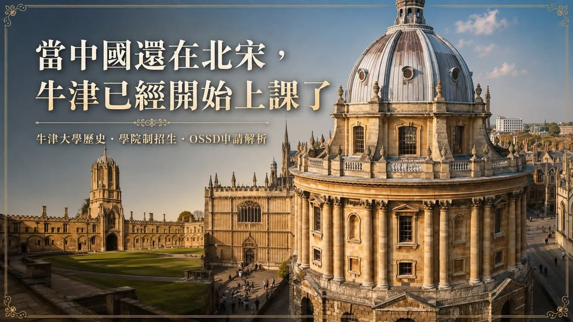

《看懂制度，選對世界》第一集
中國北宋時期，牛津大學已經開始上課了
談牛津大學、學院制招生，以及如何申請Oxford 當中國還在北宋時，牛津大學（University of Oxford）已經開始有人上課了。

【中國北宋時期，牛津大學已經開始上課了】 談牛津大學、學院制招生，以及如何申請Oxford 當中國還在北宋時，牛津大學（University of Oxford）已經開始有人上課了。據牛津大學自己的歷史紀錄，西元1096年，Oxford已經存在教學活動；而中國的北宋時期是960年至1127年。換句話說，牛津的學術歷史確實可以一路追溯到北宋。這是一所擁有超過900年持續辦學歷史的高等教育機構。
到了1167年，英王亨利二世禁止英格蘭學生前往巴黎大學就讀之後，Oxford迅速發展；13世紀，University College、Balliol College與Merton College等早期學院陸續形成，今日我們熟悉的「牛津學院制」也逐漸成形。從北宋、南宋、元、明、清，到今天的21世紀，牛津依然存在。牛津不是「一所學校」，而是一個龐大的學院共同體 Oxford的制度與一般大學不太一樣。
牛津本科生同時具有三種身分： University of Oxford的學生＋某一個學系的學生＋某一所College的學生。Oxford目前有30多所招收本科生的Colleges及Halls。學生在申請時，可以指定一所自己喜歡的College，例如Christ Church、Magdalen、Balliol、Merton等，也可以完全不指定，選擇： Open Application 由Oxford按照當年度各College的申請情況進行分配。這就是牛津非常特殊的地方。
你申請的不是一個獨立於Oxford之外的College，而是在申請Oxford某個本科Course的同時，進入College招生制度。所以牛津到底是「大學招生」，還是「各College自己招生」？Oxford的本科招生確實有很強的College參與，每一所College都有自己的Tutors參與學生評選與面試。但是所有College都必須遵循Oxford共同制定的 Common Framework for Admissions。
Oxford明確表示，各College使用同樣的申請程序，而且College之間會進行學生重新分配。牛津官方甚至指出： 大約三分之一最後成功錄取的學生，收到Offer的College並不是自己最初在UCAS指定的College。4. Oxford是不是最喜歡A Level？這也是台灣家長最常產生的誤解之一。A Level是英國本土最主要的高中升大學學術資格，因此Oxford自然使用A Level作為大部分課程頁面的基準語言。但牛津正式接受大量國際學歷，並且把不同國家的教育制度換算成相對應的A Level標準。
5. OSSD可以直接申請Oxford嗎？可以。而且不是什麼特殊個案，也不是先讀Foundation才能申請。Oxford官方目前正式將： Ontario Secondary School Diploma（OSSD） 列入可接受的加拿大高中資格，而且直接公布OSSD與A Level要求的對應方式。以Oxford目前公布的Ontario要求來看： Oxford科系要求 OSSD對應要求
-
- AAA Grade 12六門4U／4M平均 90% AAA Grade 12六門4U／4M平均 91% AAA Grade 12六門4U／4M平均 92% 而且這六門Grade 12課程必須包含申請科系要求的指定科目。還有一個非常重要的細節。
如果Oxford某個科系規定某一科必須達到： A → OSSD該指定科目至少要 93% A → OSSD該指定科目至少要 90% 如果申請的Oxford科系要求Mathematics，Ontario學生則必須修讀： MCV4U – Calculus and Vectors。目前Oxford官方說明，招生會綜合考量： 學術成績、預估成績、Academic Reference、Personal Statement，以及依科系不同可能要求的Admissions Test、Written Work與Interview。
Oxford真正想判斷的是： 這名學生有沒有能力在Oxford的學術環境中學習？Oxford自己對招生目標的描述，就是尋找具有 academic ability、curiosity與motivation，能夠適應Tutorial-based learning environment的學生。這就是Oxford錄取真正困難的地方。6. 牛津到底要什麼樣的學生？Oxford非常重視一件事情： Academic Potential 學術潛力。Oxford更想知道： 當我給你一個你以前沒有看過的問題時，你會怎麼思考？
這也是Oxford Interview非常特殊的原因。面試不是單純問： 「為什麼想來Oxford？」 「你的優點是什麼？」 「你當過哪些社團幹部？」 Oxford官方把Interview形容成一場與申請科目相關的 academic conversation，有點像一場縮小版的Oxford Tutorial。老師會觀察學生如何面對新的資訊、如何分析，以及如何建立自己的推理。所以一個學生最大的競爭力，未必是把答案背得最快。反而可能是： 遇到不會的問題，仍然能一步一步思考。
那Oxford是不是要有「很厲害的背景」才能錄取？這要看你說的「背景」是哪一種。如果你的意思是： 一定要讀國際學校 一定要家境非常好 父母必須是名人 一定要有教授推薦 一定要去海外遊學 一定要在世界知名企業實習 一定要參加二十個社團 一定要有滿滿一頁活動履歷 答案是： 不需要。Oxford官方對這件事情寫得非常明白： Tutors關注的是學生的 academic ability and potential，而且並不存在一張「必須完成哪些成就」的Checklist。
Oxford甚至特別說： 工作經驗與海外旅行都不是任何Oxford Course的必要條件。招生老師不會因為你有很多人脈，或者護照上蓋了很多國家的章，就因此受到吸引。這一點與很多人想像中的「名校申請」差異非常大。Oxford更重視的是Super-curricular，而不是堆活動 如果一個學生說： 「我參加學生會。」 「我會鋼琴。」 「我參加籃球隊。」 「我去非洲當志工。」 這些經歷當然都很好。但如果你申請Oxford History，招生老師更可能想知道： 你到底對History做了什麼？
例如： 你讀了哪一本歷史著作？讀完之後產生什麼疑問？你是否比較過兩位歷史學者對同一事件不同的解釋？你原來的觀點有沒有因為閱讀而改變？如果申請Economics： 你是否真正讀過經濟學相關內容？是否能把課堂理論拿去分析真實經濟問題？如果申請Physics： 你是否願意主動探索學校課程以外的物理問題？這些就屬於英國大學申請非常重視的： Super-curricular Activities。
也就是： Oxford目前甚至建立自己的Supercurricular Hub，鼓勵學生透過文章、講座、Podcast、影片與各種問題，進一步探索自己想讀的學科。牛津Personal Statement，學術內容要放多少？Oxford目前甚至給出一個非常有意思的建議： Personal Statement大約： 80%放在Academic Interests、Abilities與Achievements 其餘大約： 20%才放與申請學科無直接關係的課外活動。
而且從目前UCAS制度開始，Personal Statement已經由過去的一大篇文章，改成三個問題式的結構，總字數限制仍維持4,000 characters。開始累積Super-curricular。閱讀、研究、學術競賽、專題、公開講座、Online Course、Essay、Podcast甚至自主研究，都可以成為學術探索。重點不在活動名稱有多華麗。而在： 你從裡面思考了什麼。從北宋到今天，牛津挑選的始終是學者 回頭看Oxford超過900年的歷史，會發現一件很有意思的事情。1096年，中國還在北宋。
但Oxford已經開始有人聚集在這座城市學習與講學。900多年後，制度改變了，申請方式改變了，學生來自全世界。但Oxford招生最核心的精神，其實依然非常「牛津」： 你對一門學問到底有多大的好奇心？你願不願意深入鑽研？當老師提出一個沒有標準答案的問題時，你能不能思考？所以，進Oxford不需要顯赫的家庭背景，也沒有規定一定要A Level。學術成績、科目準備、學術探索、思考能力，以及你對所申請學科所展現出的潛力。 這才是理解Oxford招生時，最重要的一件事。